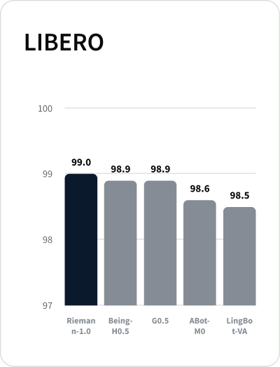
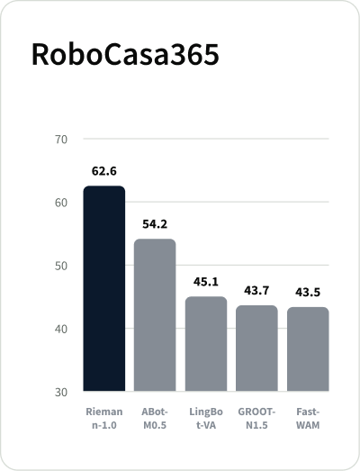
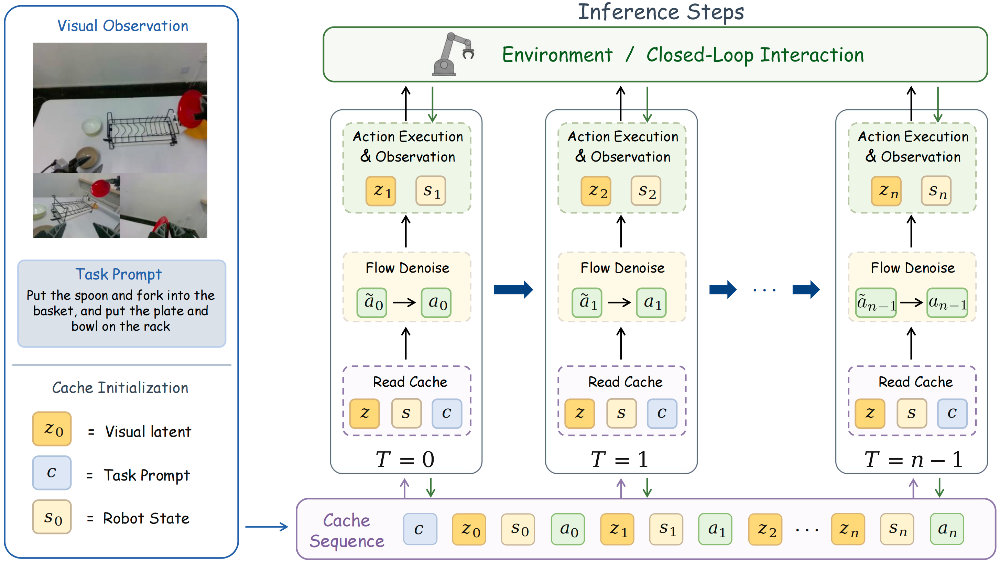

Fully causal autoregressive WAM
Jointly model embodiment-specific actions, multi-view observations, and robot states in the order used by real robot control.
 Contact
ContactRiemann-1.0
Riemann-1.0 is a World Action Model designed for general-purpose robotic operations. Based on a fully causal action-video joint modeling framework, it enables the integrated learning of world states and robotic actions.

From embodied experience to executable robot control.
Riemann-1.0 turns large-scale heterogeneous embodied experience into a generalist closed-loop robot policy, executing complex long-horizon real-world tasks with precise manipulation. The following videos showcase the capability of Riemann-1.0 autonomously performing complex real-world tasks after post-training with simple data collection.

Jointly model embodiment-specific actions, multi-view observations, and robot states in the order used by real robot control.
Progressively acquire embodied knowledge through three stages: unlabeled egocentric video learning, mixed action–trajectory supervision, and robot-specific policy enhancement.
Use one causal action-video model for both executable action prediction and action-conditioned future video generation.
Riemann-1.0 turns large-scale heterogeneous embodied experience into a generalist closed-loop robot policy, executing complex long-horizon real-world tasks with precise manipulation. The following videos showcase the complete process of Riemann-1.0 autonomously performing complex real-world tasks after post-training with simple data collection, without complex data-engineering pipelines such as DAGger.
Pull the clothes, fold them, and stack them on the right side.
First, stack all yellow blocks, followed by the red cubes, orange cubes, and finally the purple cubes.
Throw the crumpled paper into the trash can, place the spoon and fork into the basket, put the plate on the rack, empty the water from the bowl into the trash can, pull out a tissue and wipe the water off the table, and finally place the bowl on the rack.
Brand philosophy, company profile, milestones, core R&D team, credentials, partners, and benchmark customers are CMS-driven.
Place the stuffed toy, tissue pack, charger, cube, and black tape into the box, then place the pen into the pen holder.
Fold this deformable garment on the table through bimanual manipulation.
Stack the cubes with the right hand in the order of blue, yellow, red, green, and green.
Put the spoon and fork into the basket, and place the plate and bowl on the rack.

Held-out real-robot evaluations test compositional generalization by recombining seen objects into unseen tasks, and OOD zero-shot transfer with unseen objects and unseen tasks without additional demonstrations.
Place both bowls stacked on the plate.
Place the fork into the pen holder.
First, place the green cube on the red plate, then place the purple cube in the green bowl, and finally place the red cube on the red plate.
Put the red cube on the yellow plate.
Put the white napkins into the trash can.
Put the Rubik cube into the basket.
Put the towel into the basin.
Fold the blue towel and place it on the right side.
Riemann-1.0 reaches 99.0% average success rate on LIBERO, 94.3% on RoboTwin 2.0, and 62.6% on RoboCasa365.



DATA INFRA
Riemann-1.0 converts 232K+ hours of heterogeneous data into action-level supervision through hierarchical VLM segmentation, instruction and action annotation, quality filtering, 3D hand-action reconstruction, semantic categorization, and scene-skill balancing. Egocentric human videos provide broad interaction priors, while UMI / exoskeleton demonstrations and robot trajectories progressively ground those priors in executable control.

CAUSAL VIDEO-ACTION ARCHITECTURE
Riemann-1.0 preserves the causal order of interaction with a unified autoregressive factorization over action and visual latents. Multi-view observations, robot states, and embodiment-specific action tokens share an Action/Video DiT with structured causal visibility, preventing future observation leakage while retaining teacher-forced training.

Learn broad world dynamics from human and embodiment videos before robot-policy grounding.
Align visual dynamics with UMI, exoskeleton, and robot trajectory demonstrations.
Improve executable action prediction with high-quality robot interaction trajectories.
INFERENCE
Riemann-1.0 denoises the next action chunk from a growing visual-state cache. After execution, real observations are encoded back into context tokens; long rollouts use a sliding temporal window while preserving the same causal semantics.

UNIFIED ROBOT SIMULATOR
The same causal model supports two inference modes. Robot Policy maps observed history to executable actions, while World Simulator predicts the visual consequences of input action trajectories for rollout inspection and action-plan comparison.
Riemann-1.0 can act as a robot policy to use observations (images + states) and task prompt to denoise the next action chunk.
Given the first frame image, prompt, and input future actions, Riemann-1.0 can act as a world simulator to roll out action-consistent future observations.